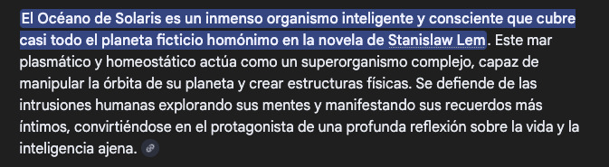
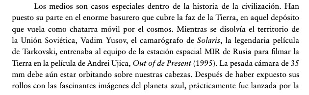
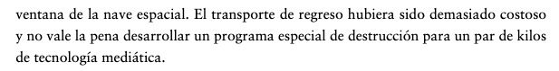
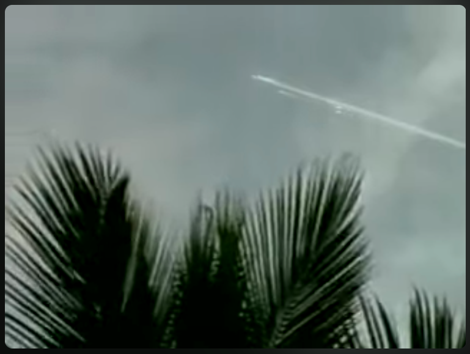
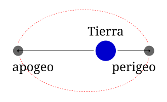
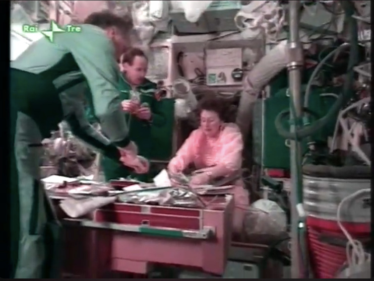

Dos hipótesis sobre dos cámaras 6 de marzo, 2024


Out of Present



La estación espacial rusa Mir operó en una órbita terrestre baja, con una inclinación de 51,6º respecto al ecuador y una altitud típica entre 300 y 400 km (perigeo/apogeo ~385-393 km). Completó más de 86.000 órbitas (33.454.000km) a unos 27.000 km/h, siendo destruida de forma controlada en el Océano Pacífico Sur en 2001.
- Órbita: Órbita terrestre baja (LEO), diseñada para la investigación científica y habitada continuamente.
- Velocidad: Aproximadamente 27.000 km/h.
- Inclinación: 51,6 grados respecto al ecuador.
- Altitud: Inicialmente sobre los 300-400 km, ajustada a lo largo de su vida útil.
- Desorbitación: 23 de marzo de 2001, en el Pacífico Sur.
La Mir fue la primera estación espacial modular, ensamblada entre 1986 y 1996, y sirvió como base tecnológica para la Estación Espacial Internacional (EEI).

Apogeo y Perigeo


Out of Present (Ujica, 1997). Narra la historia del cosmonauta Sergei Krikalev, quien quedó atrapado en la estación espacial MIR durante 10 meses (1991-1992) mientras la Unión Soviética colapsaba en la Tierra, convirtiéndose en el último ciudadano soviético en el espacio.
Línea de Kármán
Se define la línea de Kármán como el límite entre atmósfera y espacio exterior, a efectos de [aviación](https://es.wikipedia.org/wiki/Aviaci%C3%B3n y astronáutica. Esta definición es aceptada por la Federación Aeronáutica Internacional, que es una organización dedicada al establecimiento de estándares internacionales y reconocedora de los récords en aeronáutica y astronáutica.